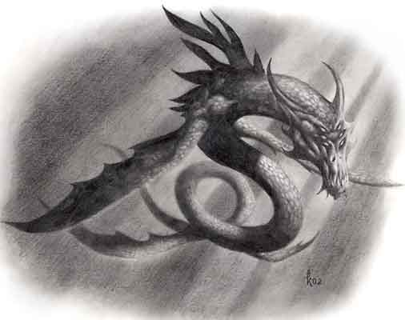

| Climate/Terrain | Grandi Laghi |
| Frequency | Very Rare |
| Organization | Solitary |
| Activity Cycle | Any |
| Diet | Carnivoro |
| Intelligence | Low Intelligence (5 - 7) |
| Treasure | D (solo nella tana) |
| Alignment | Neutral Evil |
| No. Appearing | 1 |
| Armor Class | 2 |
| Movement | 9, Sw. 24 |
| Hit Dice | 8 + 2 |
| Thac0 | 12 |
| No. of Attacks | 1 Morso |
| Damage / Attacks | 2d6+3 |
| Special Attacks | Vedi Sotto |
| Special Defenses | Vedi Sotto |
| Magic Resistance | 25 % |
| Size | Huge (8 m. lungo) |
| Morale | Fanatic (17) |
| XP value | 1750 |
Descrizione
I Lake Drakes sono i più pericolosi di tutti i Drakes. Signori incontrastati dei grandi laghi e delle grandi distese di acqua dolce sono essere crudeli che uccidono anche per soddisfare il puro gustodi supremazia. Lunghi circa 8 metri, hanno al posto delle ali due grandi pinne che consentono loro di nuotare ad incredibile velocità. Hanno scaglie di un bellissimo colore turchese. Sono, infine, caratterizzati per essere dotati di 6 occhi con i quali riescono a guardare anche nel buio delle profondità.
Combat
Il morso di queste grandi creature è letale ed è in grado di provocare danni a strutture di legno e ad imbarcazioni. Respirano sia in acqua che all'esterno, ma si avventurano molto raramente sulla terra ferma spinti, solo in caso di vera necessità. Non di rado. però, attaccano porticcioli e insediamenti sulla costa spingendosi sulla terra ferma per distruggere le strutture e per fare man bassa delle risorse trovate. Quando si trovano in superficie possono effettuare un attacco speciale con le loro grandi pinne, creando una gigantesca onda che si abbatte sulla vittima designata entro 15 metri di distanza. La vittima deve superare un tiro salvezza contro paralisi (modificato dal bonus della forza al tiro per colpire) o essere scaraventata alla fine dell'onda (knockdown a 15 metri di distanza dal Drake) subendo 1d8 danni da impatto.
Sono dotati di sensi finissimi in acqua percependo la presenza di altre creature anche a 500 metri di distanza. La loro velocità e la colorazione delle loro scaglie li rende particolarmente difficili da vedere in acqua (impongono ai nemici -4 alla sorpresa quando attaccano).
Il Lake Drake è totalmente immune agli effetti dell'acqua (e quindi alle magie di evocation water), inoltre è partcolarmente resistente al freddo, dimezza, quindi, tutti i danni di questo tipo ed, in ogni caso, assorbe i primi tre di questi danni.
Habitat/Society
Il Lake Drake è una creatura solitaria, quando si trova in un lago ne è il padrone assoluto. La sua tana si trova sempre nel punto più profondo del lago. Lascia abitualmente la tana per periodi di 1-4 ore e pattuglia il lago in cerca di vittime e per controllare il suo territorio, per poi rientrare e riposarsi una o due ore prima di uscire di nuovo. Può incontrarsi quindi in qualsiasi momento del giorno e della notte.
Odia la presenza di esseri civilizzati di superficie e distrugge costantemente i loro accampamenti e le loro imbarcazione depredandoli. Tollera, invece, umanoidi marini come lizard men, kua toa ecc... in questi casi costoro sono dediti a periodiche donazioni al drake per tenerselo buono, in alcuni casi il drake è addirittura venerato come essere superiore.
Ecology
I Lake Drakes sono al vertice della catena alimentare. Non possono tollerare di condividere il territorio del lago (o parte di questo per i laghi più grandi) con altre grandi creature. Le combatteranno e le scacceranno e se sono più deboli abbandoneranno presto quella zona per trovarsene un'altra. La loro pelle è particolarmente ricercata in quanto con le loro scaglie è possibile produrre ottime corazze speciali.
Mystical Resource Sourge
(Membrana della Pinna) Quantità: 2, Presenza 33% - Scuola di Magia:
Evocation Water
- Qualità della Risorsa:
Common.
Mystical Resource Sourge
(Scaglie) Quantità: 1d3+1, Presenza 33% - Effetto Particolare:
Resistenza al Freddo
- Qualità della Risorsa:
Common.
Mystical Resource Sourge
(Cuore) Quantità: 1, Presenza 50% - Scuola di Magia:
Enchantment
- Qualità della Risorsa:
Uncommon.